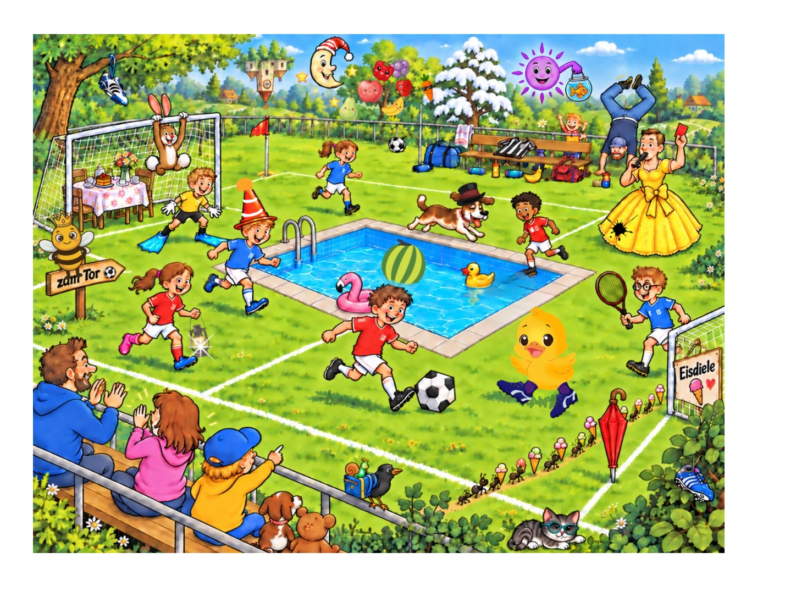

Animationsvorschau: 11 Geschichten
Originalbilder des verrückten Fußballspiels, unveränderte Übergangsdauer von 0,55 Sekunden. Ohne Lesespiel und Spielstände.

Originalbilder des verrückten Fußballspiels, unveränderte Übergangsdauer von 0,55 Sekunden. Ohne Lesespiel und Spielstände.
